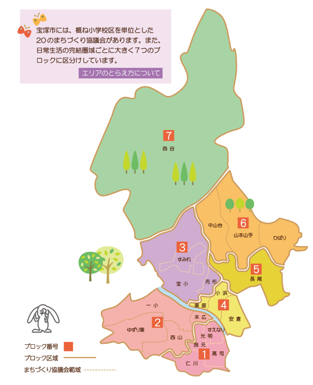

クールシェア宝塚2025
クールシェア宝塚2025マップ
全体マップ
光明
| スポット名称 | 住所 | 行ける日 | ホームページ | スタンプ設置 | 景品お渡し |
| メダカ工房 | 福井町32-36 | 月・木・金 10:00~17:00 | ◯ | ◯ | |
| 光明デイサービスセンター | 光明町10-24 | 毎日 9:00~17:00 | ホームページ | ◯ | ◯ |
| スミレン小林 介護ステーション | 小林4-7-47 | 月〜金 9:00~17:00 | ホームページ | ◯ | ◯ |
| (株)近畿メディカル えがおDe薬局 宝塚店 | 福井町32-17 松本ビル103 | 月〜金 9:00~19:00 土 9:00~13:00 | ホームページ | ◯ | ◯ |